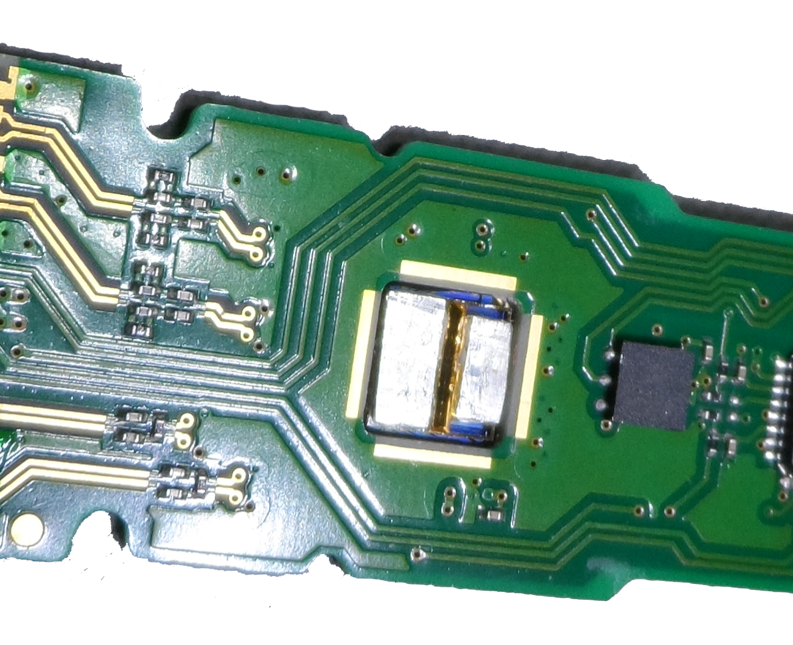

| EOTRON | About Us | Technology | Products | Contact Us |
Eotron’s Silicon Heatsink is designed to replace compact copper or aluminum heatsinks where the size, space and efficiency of the heatsink is crucial. Our Silicon Heatsink delivers 5 to 10 times more fin-surface area than metal heatsinks of the same size due to silicon’s ability to fabricate more fins and as thin as 10μm in size.
Silicon Heatsinks can be used in a convective cooling or forced-air cooling configuration. Depending on the heat dissipation configuration, the base of the Silicon Heatsink can be soldered, epoxied or attached using various thermal compounds directly to any silicon IC chip or PCB.
Our proprietary fabrication techniques produced the most efficient heatsink designs (patented) while using a bulk low-cost process.
| Standard Heatsink Size | 10mm(L) x 10mm(W) x 1.2mm(H) |
| Silicon Heatsink Base Thickness | >0.2 to 0.3mm |
| Silicon Fin Thickness | 30 to 75μm tapered shape (US Patent) |
| Silicon Fin Pitch | 0.3 to 0.5mm depending on forced-air or not |
| Surface Finish | Less than 0.1μm |
| Special Enhancements |
|
*** Custom size and fin design is also available.

|

|
Please contact us for further information at sales@eotron.com.
Eotron’s Silicon Cold Plate was designed to replace copper or aluminum metal cold plates with silicon to provide better cooling efficiency, form-factor and thermal expansion match with silicon IC chips. Any IC chip can be mounted directly on the Silicon Cold Plate with electrical layout printed on the surface of SCP allowing the lowest thermal resistance from IC chip to liquid channel embedded in the SCP.
The greatest advantage of the SCP product is delivering coolant directly underneath of high thermal load IC chips and without any thermal expansion mismatch. The SCP can be bonded to an PCB with solder bumps further isolating high thermal load ICs from those devices sensitive to heat.
Our Silicon Cold Plate has proven to deliver more than 80 watts/cm2 of heat dissipation in the smallest form factor of any cold plate design and SCP has a lower fouling factor than metal cold plate designs due to non-oxidation and non-chemical reacting physical property of silicon. Both surfaces of the SCP can be printed with electrical layout to bond IC chips reducing thermal resistance to a minimum.
| Silicon Cold Plate Size | Up to 70mm(L) x 70mm(W) x 2mm or 4mm(H) |
| Inlet and Outlet Port Size | >1.59mm (1/16") or 3.175mm (1/8") |
| Heat Dissipation | Up to 80 watts/cm2 (1.59mm tubing) |
| Flow Rate | 0.25 liter/minutes (for 1.59mm tubing) |
| Maximum Pressure | Up to 1034 Kilopascal (150 PSi) |
| PCB Layout | Single layer, 0.1mm features |
| Advantages |
|
Please contact us for further information at sales@eotron.com.
 Eotron’s all Silicon TO-Can package is designed to replace a conventional optical metal TO-Can packages. This package was designed to improve thermal conductivity and lower production cost. The Silicon TO-Can package consists of three separate silicon components and an optical window to package any small photonic device such as edge-emitting Laser Diodes, VCSELs, UV LEDs or high power LEDs. Each silicon component and window are bonded together to seal the light source.
Eotron’s all Silicon TO-Can package is designed to replace a conventional optical metal TO-Can packages. This package was designed to improve thermal conductivity and lower production cost. The Silicon TO-Can package consists of three separate silicon components and an optical window to package any small photonic device such as edge-emitting Laser Diodes, VCSELs, UV LEDs or high power LEDs. Each silicon component and window are bonded together to seal the light source.
Among the advantages of our Silicon TO-Can package is eliminating wire-bonding by direct bonding of the device and flip-chip bonding of TO-Can package to improve thermal dissipation. No wire-bonding and better thermal dissipation and lower circuit inductance allows the device to operate at high frequency and higher peak power operation.
Wafer Scale assembly of the silicon package and device using Pick and Place robots allow high volume production and lower manufacturing cost.
| Current Silicon TO Can Package Size | 4.3mm(L) x 3.2mm(W) x 3.0mm(H), custom design available |
| Illumination Source | Edge-emitter lasers, VCSEL, LED |
| Heat Dissipation | Up to 1 watt (with silicon heatsink) |
| Protective Window | Glass or quartz window (Passive alignment possible) |
| Advantages |
|
Please contact us for further information at sales@eotron.com.
 Eotron’s Patented Silicon-based Laser packaging was designed to mount multiple high power diode bars (Stacks) in a liquid cooled configuration. Laser Diode Bars are bonded to each side of our proprietary Silicon Fins in a 1-bar, 2-bar, 5-bar or 10-bar configuration using soft-solder. Each Silicon Fin has internal ’Macro’ water channels so each Diode Bar is individually cooled. The package consists of silicon-base, silicon-spacer and silicon-fins to assembly any 1mm x 10mm or 2mm x 10mm laser diode bar.
Eotron’s Patented Silicon-based Laser packaging was designed to mount multiple high power diode bars (Stacks) in a liquid cooled configuration. Laser Diode Bars are bonded to each side of our proprietary Silicon Fins in a 1-bar, 2-bar, 5-bar or 10-bar configuration using soft-solder. Each Silicon Fin has internal ’Macro’ water channels so each Diode Bar is individually cooled. The package consists of silicon-base, silicon-spacer and silicon-fins to assembly any 1mm x 10mm or 2mm x 10mm laser diode bar.
Our liquid cooled silicon diode stack maximizes brightness in a 10mm x 10mm active area, emitting up to 1 kW, and the silicon laser package delivers a thermal resistance of less than 0.1°C/watts in 10mm2 area.
Due to a special tooling requirement and assembly techniques, a sub-assembled silicon laser package can be purchased for your application.
| Silicon Laser Package Configuration | Single bar, 2-bar, 5-bar or 10-bar |
| Diode Bar Configuration | 1mm x 10mm or 2mm x 10mm |
| Diode Bar Thickness | 120 to 130 μm (Required to adjust diode package pitch) |
| Diode Bar-to-bar Pitch | 1mm (nominally) |
| Liquid Flow Channel Design | Macro-channel (>1mm2 cross-section) |
| Water Flow-rate | 11 liters/minute |
| FAC and SAC Lens Requirements |
FAC lens: Passive alignment onto the stack SAC lens: Silicon SAC mounting structure available |

|

|
Please contact us for further information at sales@eotron.com.
Eotron’s Silicon Heat Reservoir (SHR) is based on the concept of absorbing waste heat using Phase-Change-Material (PCM) to slowly absorb and dissipate heat over time, smoothing out thermal loading in a pulsed operation. Our Silicon Heat Reservoir (SHR) is constructed using mono-crystal silicon to spread heat in a PCM silicon filled container, allowing waste heat to efficiently migrate from the heat source to the PCM. The SHR allows a device to maintain operating temperatures slightly below the melting temperature of PCM until it reaches saturation. Typically, PCM expands thermal capacity by a factor of 5 to 8 times more compared to other solid thermal materials.
This silicon structure is designed to maintain device temperature under certain heat loading conditions. Optimizing the design of the silicon structure is needed to manage the overall thermal performance of the heat source under variable ambient conditions.
The design of SHR can be optimized according to customer needs and application requirements.
| Silicon Heat Reservoir Size | 30mm(L) x 30mm(W) x 2mm(H), (custom designs available) |
| Heat Capacity | A few watts per centimeter squared heat density |
| Advantages |
|

|

|
Please contact us for further information at sales@eotron.com.
Eotron’s Silicon Thermal Isolator (STI) is based on a concept of separating the thermal path between a high heat producing device and an adjacent temperature sensitive device. The specially designed and patented silicon structure allows separation of any heat generating device to a device which may be sensitive to temperature.
Our Silicon Thermal Isolator works as a heat spreader along with a special patented structure added to the silicon, which isolates the thermal ground for each IC chip. Most designs also use the electrical ground as the thermal ground. This results in all heat generating devices (IC chips) mounted on PCB to experience higher junction temperatures due to the temperature rise in the ground plane. Our Silicon Thermal Isolator (STI) mounted on the heat generating and adjacent heat-sensitive devices improves the performance and life-time of all devices. Also, a STI can be used as a silicon interposer with heat separating structure embedded in the interposer. Data shows the STI can achieve more than 10 degrees of temperature difference between two different areas in single Silicon Thermal Isolator.
We can provide more specific information depending on your application.
| Silicon Thermal Isolation Size | 30mm(L) x 30mm(W) x 1mm(H), (custom designs available) |
| Temperature Separation | 10 °C or more |
| Advantages |
|
|  |
Please contact us for further information at sales@eotron.com.